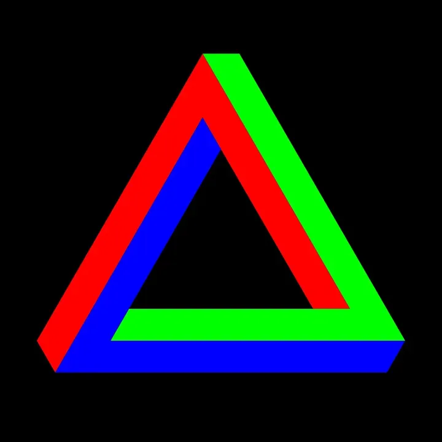

Un amico l’altra sera mi ha fatto notare come il colore bianco sia l’ unione di
tutti i colori mentre il nero sia l’ assenza di colori e il completo
assorbimento di luce visibile.
Sono però il bianco e il nero tra loro opposti?
Spesso, io in primis, si è portati a rispondere di si. Persino il Tao stesso li mette in relazione, ma con estrema eleganza non si esprime sulla loro definizione. Sarebbe interessante approfondire anche il pensiero orientale in merito a questi due colori. Per il momento però ragioniamoci sopra da soli.
Il nero è assenza di luce. Assorbe.
L’assenza di qualcosa è il suo opposto?
Come possiamo ottenere il nero? Provando ad unire insieme i colori otteniamo qualcosa di scuro, simile al nero, ma non è il nero. L’ unico modo è spegnere la luce ed alle volte non basta chiudere gli occhi…
Come possiamo ottenere il bianco? Tutti abbiamo provato almeno una volta a giocare coi colori e come per l’esperimento per ottenere il nero, non riusciamo ad ottenerlo mischiando tra loro i colori, almeno quelli materiali.
Come possiamo ottenere il bianco? Tramite due prismi e una lente dice la scienza. Per chi fosse interessato al come consiglio questo video:
Vi è un altro modo però per ottenere il bianco. Un processo, tenuto per molto tempo segreto, che gli alchimisti di tutto il mondo si tramandano da tempi immemori. Il processo prende il nome di Albedo o “Opera al Bianco”.
Schiariscono la materia scura, fermentata e putrefatta per riportare la parte minerale alla sua luce, al suo splendore.
Per chi fosse interessato al come, invito ad intraprendere la ricerca, ne varrà sicuramente la pena.
Altri spunti di riflessione
Se il nero assorbe il bianco, il bianco è contenuto nel nero? Assorbire la luce ma esserne anche privo.

Come forse aveva intuito Penrose…